StatsPlots.jl
MCMCChains implements many functions for plotting via StatsPlots.jl.
Simple example
The following simple example illustrates how to use Chain to visually summarize a MCMC simulation:
using MCMCChains
using StatsPlots
# Define the experiment
n_iter = 100
n_name = 3
n_chain = 2
# experiment results
val = randn(n_iter, n_name, n_chain) .+ [1, 2, 3]'
val = hcat(val, rand(1:2, n_iter, 1, n_chain))
# construct a Chains object
chn = Chains(val, [:A, :B, :C, :D])
# visualize the MCMC simulation results
plot(chn; size=(840, 600))GKS: cannot open display - headless operation mode active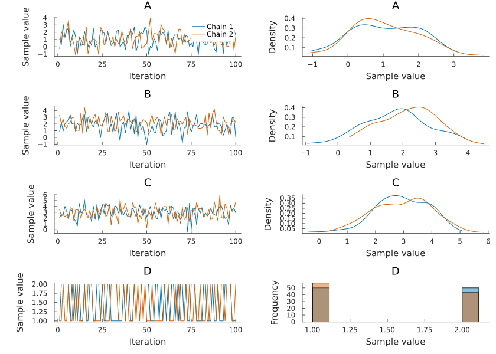
plot(chn, colordim = :parameter; size=(840, 400))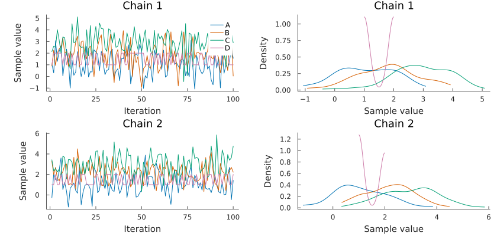
Note that the plot function takes the additional arguments described in the Plots.jl package.
Mixed density
plot(chn, seriestype = :mixeddensity)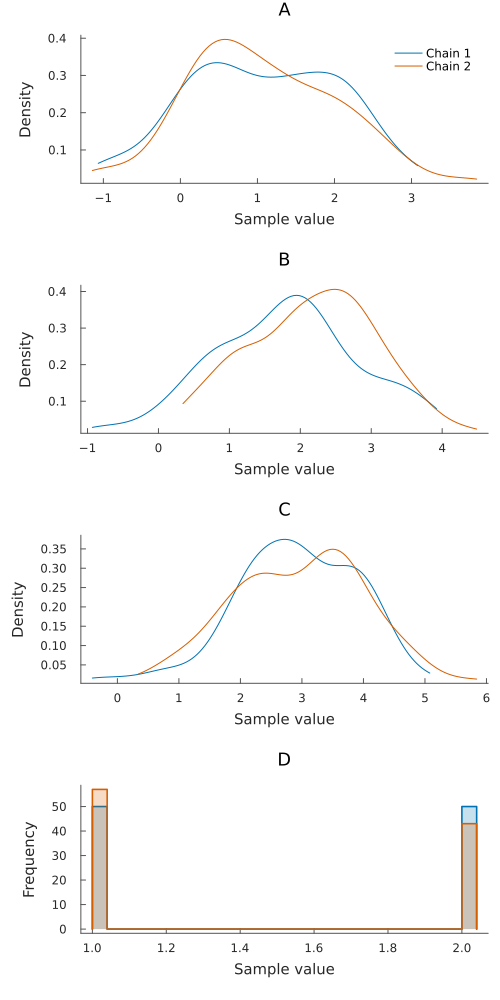
Or, for all seriestypes, use the alternative shorthand syntax:
mixeddensity(chn)Trace
plot(chn, seriestype = :traceplot)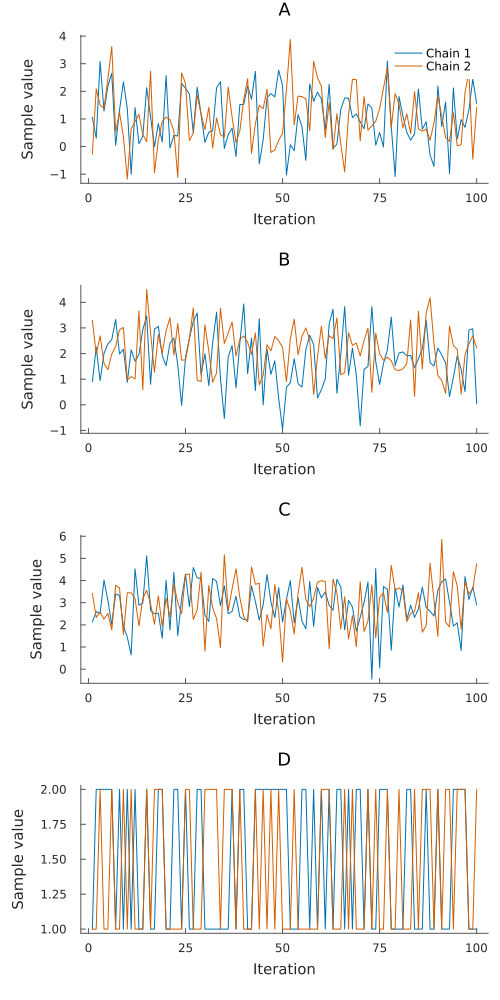
traceplot(chn)Running average
meanplot(chn)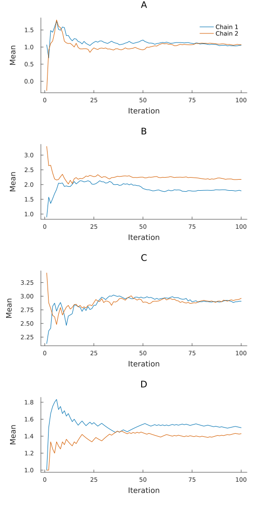
Density
density(chn)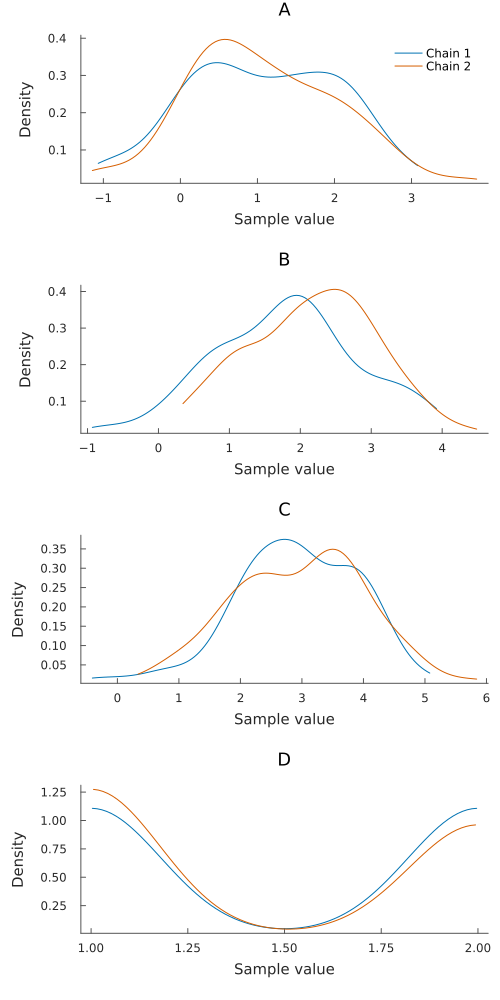
Histogram
histogram(chn)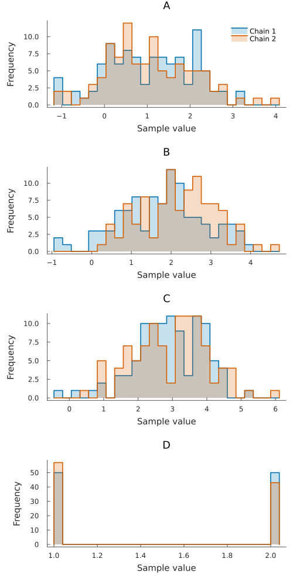
Autocorrelation
autocorplot(chn)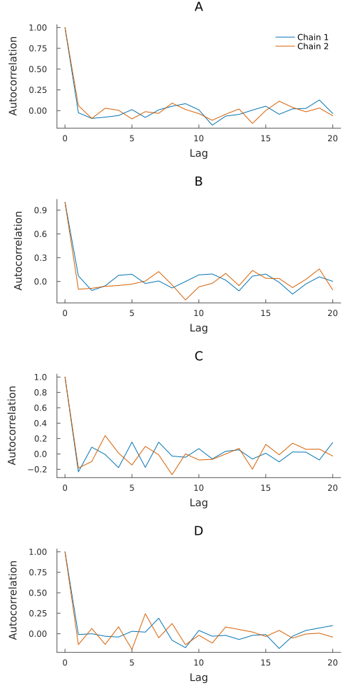
Rank
A rank plot histograms the ranks of the draws pooled over all chains, one line per chain. If every chain is sampling the same posterior then the ranks are uniform, so each chain should stay near the dashed line at the expected count. Rank plots keep working on long chains, where a trace plot turns into a band of ink (Vehtari et al. 2021).
rankplot(chn)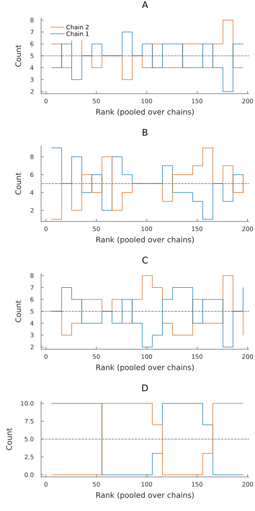
Use nbins to set how many bins the ranks are collected into.
rankplot(chn, nbins = 10)Empirical CDF
plot(chn, seriestype = :ecdfplot)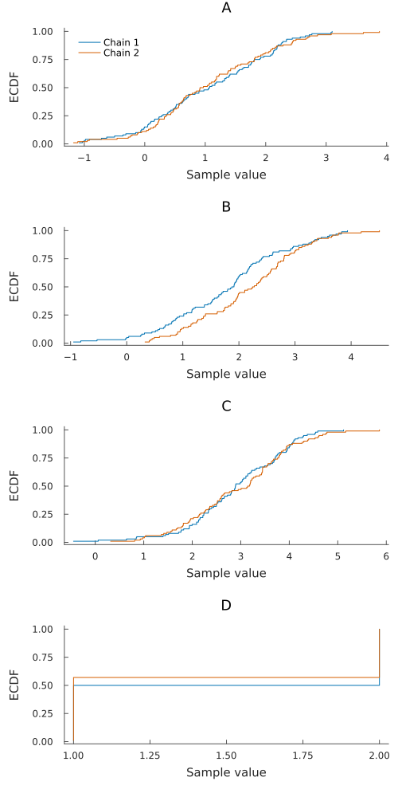
Two chains that agree lie on top of each other here, which is easier to judge than two density curves, because the eye compares positions rather than areas. The name ecdfplot belongs to StatsPlots and takes a vector, so a chain goes through plot with the series type.
Convergence diagnostics
Most of the time the question is only whether anything went wrong, and diagnosticsplot answers that in one grid. Each cell is coloured by whether the value is fine, worth a look, or bad, and grey where the diagnostic does not apply.
diagnosticsplot(chn)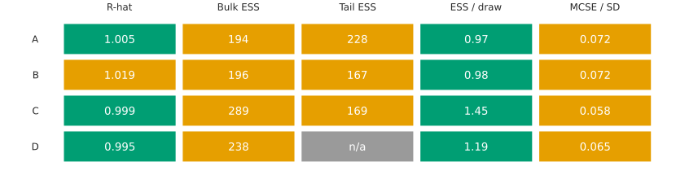
essplot, rhatplot and mcseplot draw one dot per parameter for the diagnostics that ess, rhat and mcse already report. The dashed line is the threshold recommended by Vehtari et al. (2021), an effective sample size of 400 and an R-hat of 1.01.
essplot(chn)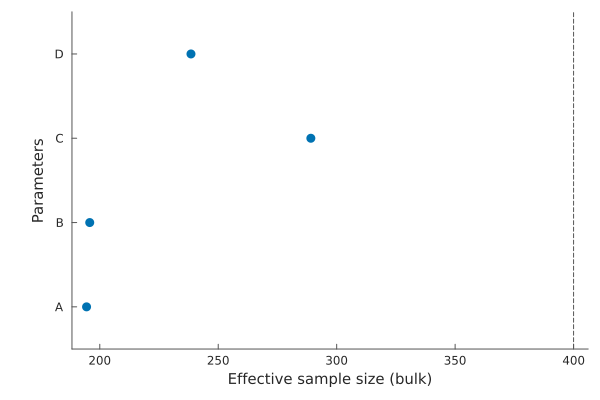
kind picks which effective sample size to estimate.
essplot(chn, kind = :tail)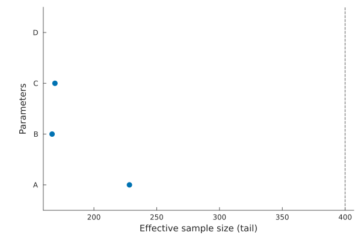
relative = true divides by the number of draws, which keeps the axis readable when chains are long.
essplot(chn, relative = true)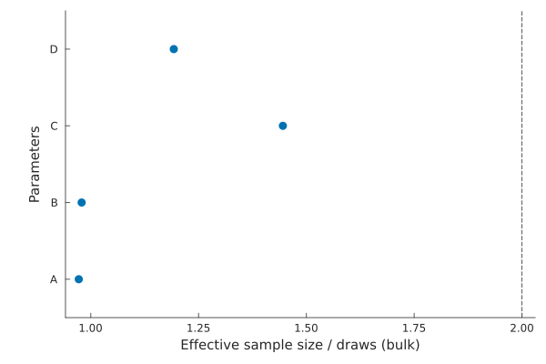
rhatplot(chn)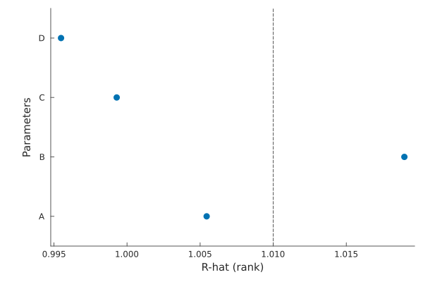
mcseplot(chn, relative = true)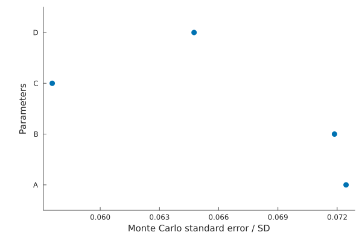
A single number says how the run ended. evolutionplot says whether it was still improving, which is what tells you that running for longer would help.
evolutionplot(chn)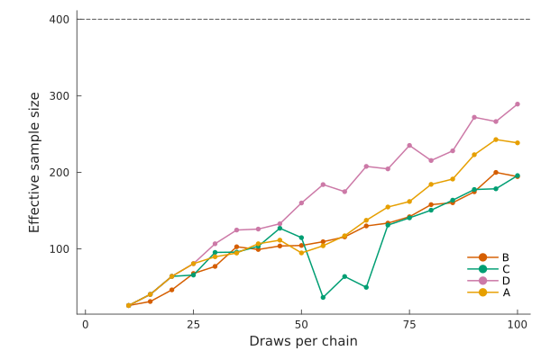
evolutionplot(chn, diagnostic = :rhat)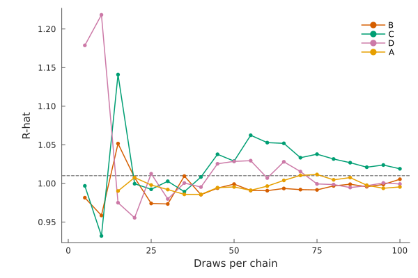
Parallel coordinates
parallelplot draws one line per draw across all parameters, standardised so that parameters on different scales share one axis.
parallelplot(chn)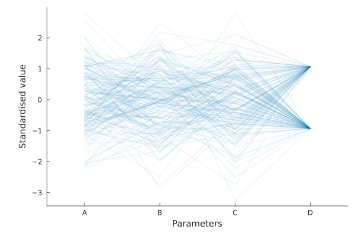
When the chain records divergent transitions they are drawn on top in a second colour, which is what makes this plot worth reading: it shows where in the parameter space the sampler is failing.
parallelplot(chn, num_draws = 100, standardise = false)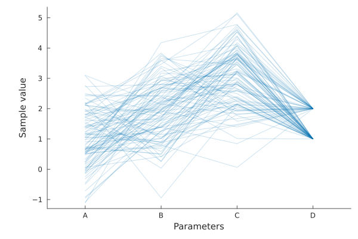
Violin
Violin plots are similar to box plots but also show the probability density of the data at different values, smoothed by a kernel density estimator.
violinplot(chn) # Plotting parameter 1 across all chains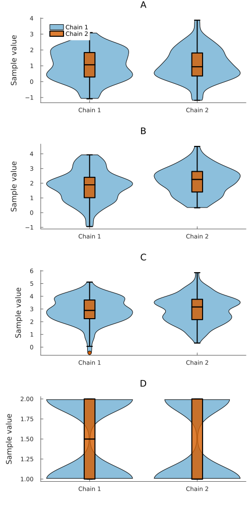
violinplot(chn, 1) # Plotting parameter 1 across all chains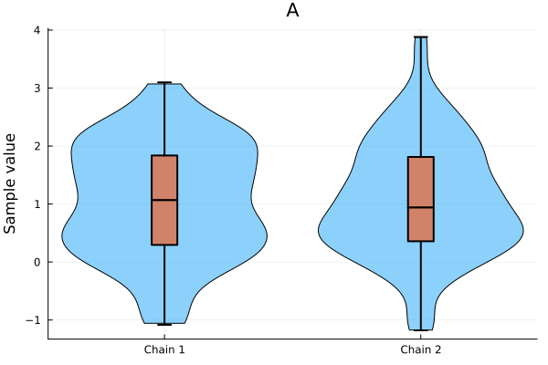
violinplot(chn, :A) # Plotting a specific parameter across all chains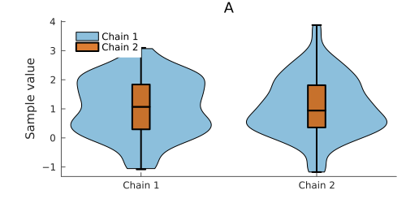
violinplot(chn, [:C, :B, :A]) # Plotting multiple specific parameters across all chains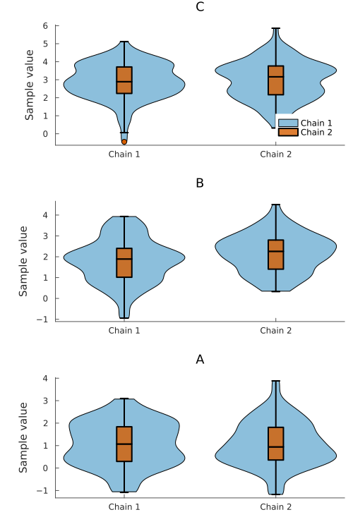
violinplot(chn, 1, colordim = :parameter) # Plotting chain 1 across all parameters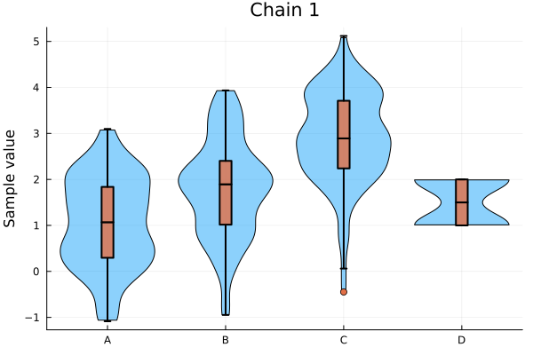
violinplot(chn, show_boxplot = false) # Plotting all parameters without the inner boxplot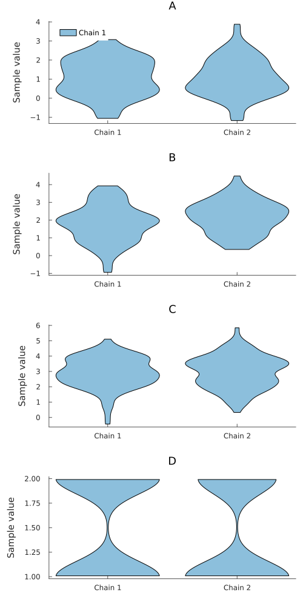
You can also aggregate (pool) samples from all chains for a given parameter by using append_chains = true. This is useful when you want to visualize the overall posterior distribution without distinguishing between individual chains.
violinplot(chn, :A, append_chains = true) # Single parameter, all chains appended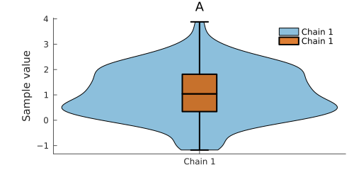
violinplot(chn, append_chains = true) # All parameters, all chains appended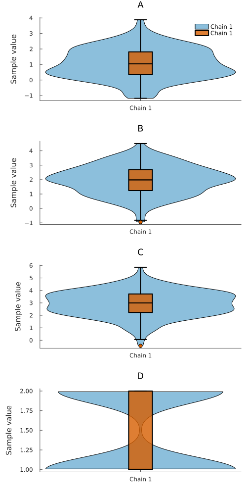
You can also use the plot function with seriestype = :violinplot or seriestype = :violin
plot(chn, seriestype = :violin)Corner
corner(chn)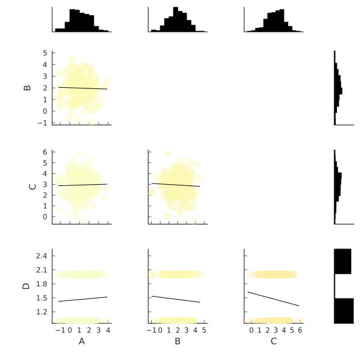
Energy Plot
The energy plot is a diagnostic tool for HMC-based samplers (like NUTS) that helps diagnose sampling efficiency by visualizing the energy and energy transition distributions. This plot requires that the chain contains the internal sampler statistics :hamiltonian_energy and :hamiltonian_energy_error.
# First, we generate a chain that includes the required sampler parameters.
n_iter = 1000
n_chain = 4
val_params = randn(n_iter, 2, n_chain)
val_energy = randn(n_iter, 1, n_chain) .+ 20
val_energy_error = randn(n_iter, 1, n_chain) .* 0.5
full_val = hcat(val_params, val_energy, val_energy_error)
parameter_names = [:a, :b, :hamiltonian_energy, :hamiltonian_energy_error]
section_map = (
parameters=[:a, :b],
internals=[:hamiltonian_energy, :hamiltonian_energy_error],
)
chn_energy = Chains(full_val, parameter_names, section_map)
# Generate the energy plot (default is a density plot).
energyplot(chn_energy)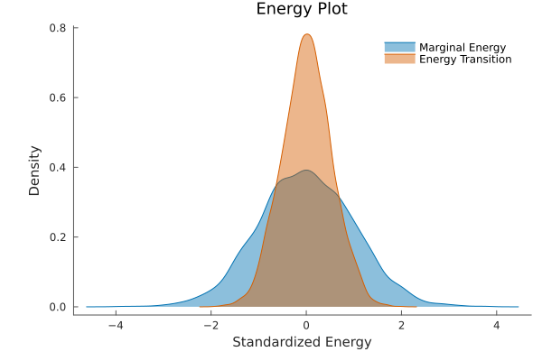
# The plot can also be generated as a histogram.
energyplot(chn_energy, kind=:histogram)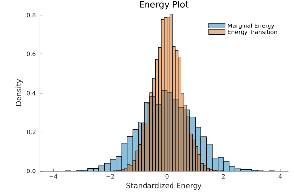
Sampler diagnostics
nutsplot draws the statistics an HMC sampler records about its own behaviour, one series per chain.
# A chain carrying the sampler statistics NUTS records.
n_iter = 500
n_chain = 4
nuts_val = hcat(
randn(n_iter, 1, n_chain),
clamp.(0.9 .+ 0.08 .* randn(n_iter, 1, n_chain), 0, 1),
0.35 .+ 0.02 .* randn(n_iter, 1, n_chain),
float.(rand(2:5, n_iter, 1, n_chain)),
float.(rand(n_iter, 1, n_chain) .< 0.03),
)
chn_nuts = Chains(
nuts_val,
[:a, :acceptance_rate, :step_size, :tree_depth, :numerical_error],
(
parameters = [:a],
internals = [:acceptance_rate, :step_size, :tree_depth, :numerical_error],
),
)
nutsplot(chn_nuts)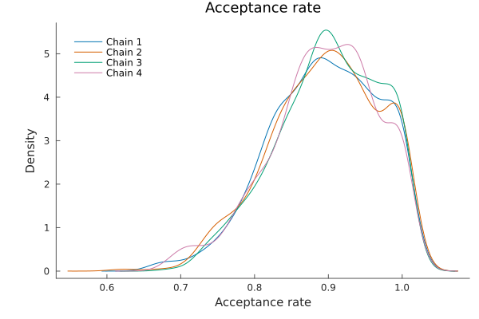
nutsplot(chn_nuts, kind = :treedepth)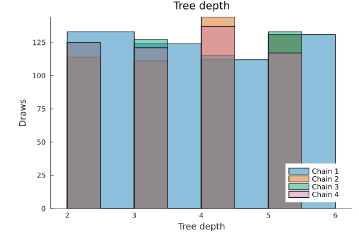
nutsplot(chn_nuts, kind = :divergence)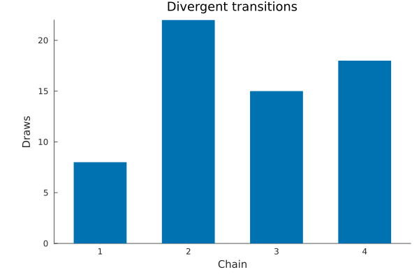
For plotting multiple parameters, ridgeline, forest and caterpillar plots can be useful.
Ridgeline
ridgelineplot(chn, [:C, :B, :A])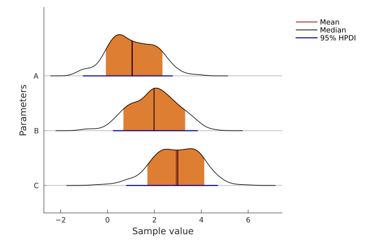
Forest
forestplot(chn, [:C, :B, :A], hpd_val = [0.05, 0.15, 0.25])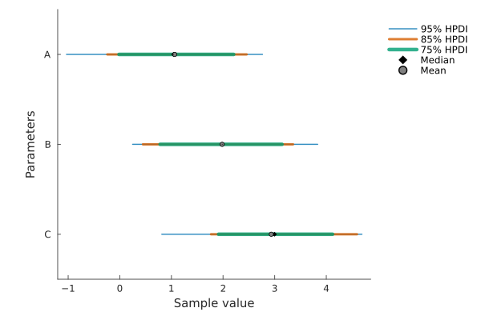
Caterpillar
forestplot(chn, chn.name_map[:parameters], hpd_val = [0.05, 0.15, 0.25], ordered = true)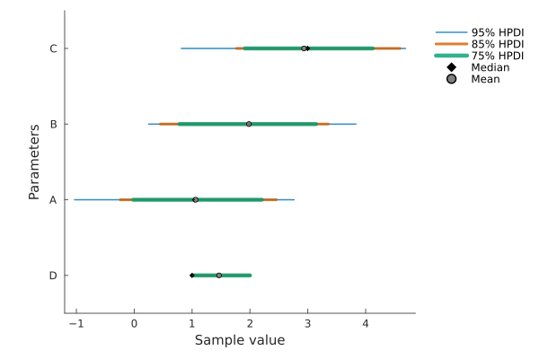
Posterior Predictive Checks (PPC)
Posterior Predictive Checks (PPC) are essential tools for Bayesian model validation. They compare observed data with samples from the posterior predictive distribution to assess whether the model can reproduce key features of the data. Prior Predictive Checks can also be performed to evaluate prior appropriateness before seeing the data.
using Random
Random.seed!(123)
# Generate posterior samples (parameters)
n_iter = 500
posterior_data = randn(n_iter, 2, 2) # μ, σ parameters
posterior_chains = Chains(posterior_data, [:μ, :σ])
# Generate posterior predictive samples
n_obs = 20
pp_data = zeros(n_iter, n_obs, 2)
for i in 1:n_iter, j in 1:2
μ = posterior_data[i, 1, j]
σ = abs(posterior_data[i, 2, j]) + 0.5 # Ensure positive σ
pp_data[i, :, j] = randn(n_obs) * σ .+ μ
end
pp_chains = Chains(pp_data)
# Generate observed data
Random.seed!(456)
observed = randn(n_obs) * 1.2 .+ 0.3
# Basic posterior predictive check (density overlay)
# Note: observed data is shown by default for posterior checks
ppcplot(posterior_chains, pp_chains, observed)
Plot Types
Our PPC implementation supports four main plot types:
Density Plots (Default)
# Density overlay with customized transparency
ppcplot(posterior_chains, pp_chains, observed;
kind=:density, alpha=0.3, num_pp_samples=50)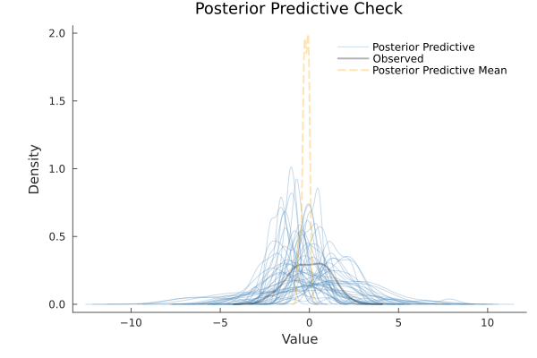
Histogram Comparison
# Normalized histogram comparison
ppcplot(posterior_chains, pp_chains, observed; kind=:histogram)
Cumulative Distribution Functions
# Empirical CDFs comparison
ppcplot(posterior_chains, pp_chains, observed; kind=:cumulative)
Scatter Plots with Jitter
# Index-based scatter plot with automatic jitter for small samples
ppcplot(posterior_chains, pp_chains, observed;
kind=:scatter, num_pp_samples=8, jitter=0.3)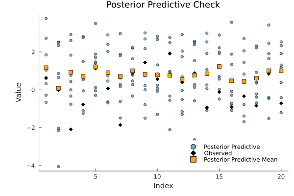
Advanced Styling and Options
# Comprehensive customization example
ppcplot(posterior_chains, pp_chains, observed;
kind=:density,
colors=[:steelblue, :darkred, :orange], # [predictive, observed, mean]
alpha=0.25,
observed_rug=true, # Add rug plot for observed data
num_pp_samples=75, # Limit predictive samples shown
mean_pp=true, # Show predictive mean
legend=true,
random_seed=42) # Reproducible subsampling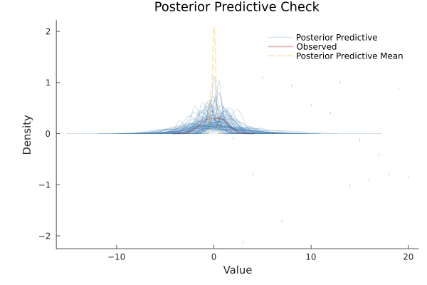
Prior Predictive Checks
Prior predictive checks assess whether priors generate reasonable data before observing actual data. The ppc_group parameter controls default behavior:
# Prior predictive check - observed data hidden by default
ppcplot(posterior_chains, pp_chains, observed; ppc_group=:prior)
# Prior check with observed data explicitly shown for comparison
ppcplot(posterior_chains, pp_chains, observed;
ppc_group=:prior, observed=true, alpha=0.4)
Controlling Observed Data Display
You can explicitly control whether observed data is shown regardless of the check type:
# Posterior check without observed data
ppcplot(posterior_chains, pp_chains, observed;
ppc_group=:posterior, observed=false)
Performance and Sampling Control
For large datasets or when you want to reduce visual clutter:
# Limit the number of predictive samples displayed
ppcplot(posterior_chains, pp_chains, observed;
num_pp_samples=25,
random_seed=123) # Reproducible results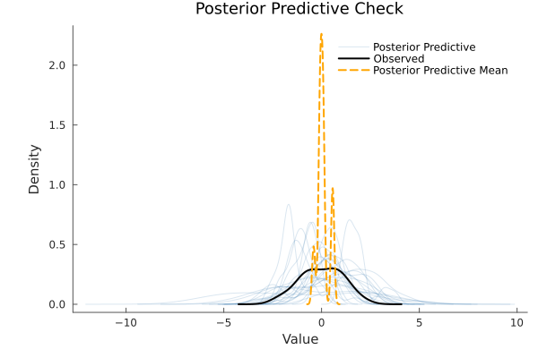
ppcplot(posterior_chains::Chains, posterior_predictive_chains::Chains, observed_data::Vector;
kind=:density, alpha=nothing, num_pp_samples=nothing, mean_pp=true, observed=nothing,
observed_rug=false, colors=[:steelblue, :black, :orange], jitter=nothing,
legend=true, random_seed=nothing, ppc_group=:posterior)Appearance
Every plot on this page is drawn with the same look: no grid, no box around the plot or the legend, grey axes and text, and chains coloured from the Okabe-Ito palette, which stays readable for the common forms of colour blindness.
plot_style! changes that for every plot drawn after it.
plot_style!(grid = :dots, framestyle = :box)
meanplot(chn)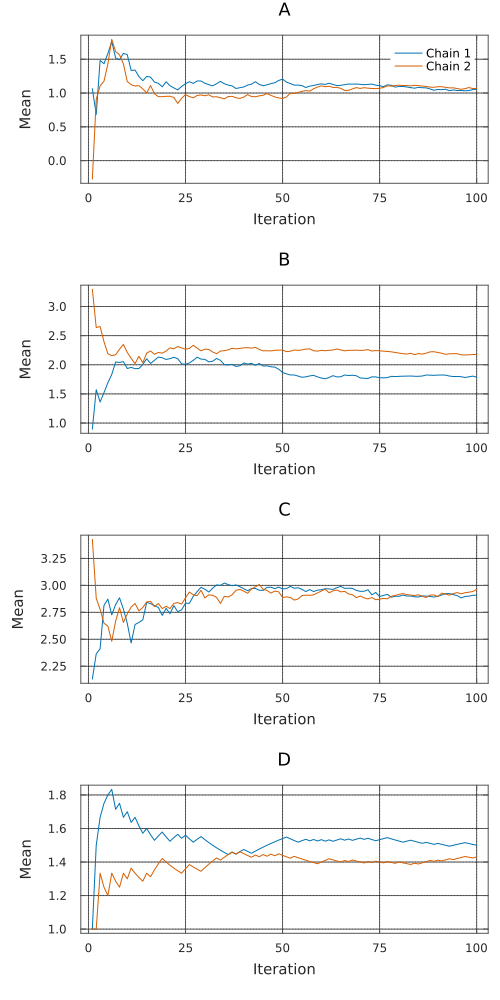
plot_style!(grid = :none, framestyle = :axes, palette = ["#332288", "#117733", "#DDCC77", "#CC6677"])
meanplot(chn)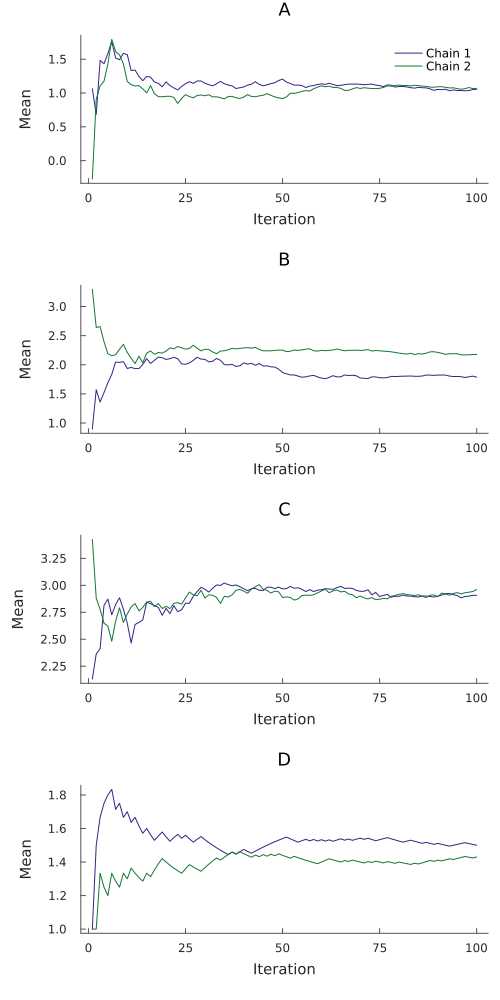
background = :transparent draws no background at all, which is what you want when the page behind the plot is not white.
Everything plot_style! sets is a default, so anything passed to a single plot still wins.
reset_plot_style!()
meanplot(chn, grid = true, legend = :outertopright)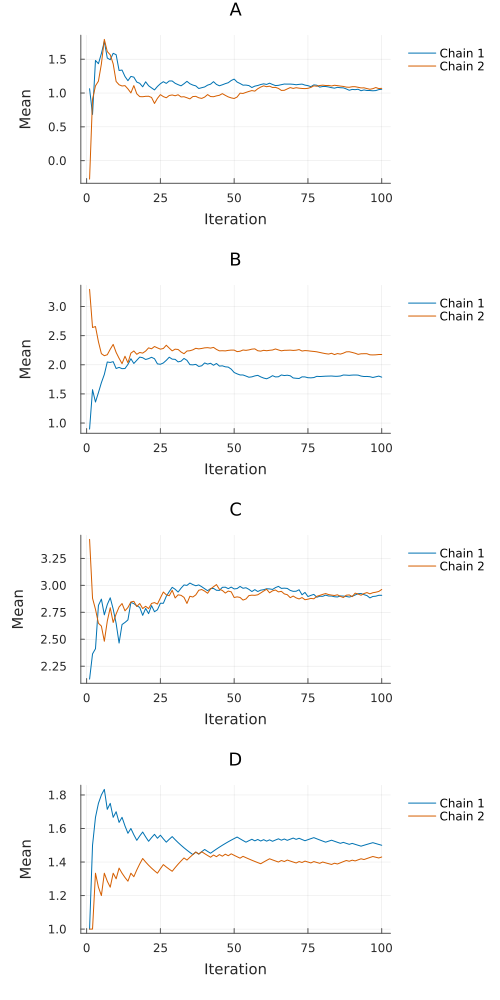
By default only the first panel of a multi-panel plot names the chains, since the same legend on every panel is ink that says nothing new and lands on top of the data. Set legend_panel to :all or :none to change that.
reset_plot_style!()API
MCMCChains.energyplot — Function
energyplot(chains::Chains; kind=:density, kwargs...)Generate an energy plot for the samples in chains.
The energy plot is a diagnostic tool for HMC-based samplers like NUTS. It displays the distributions of the Hamiltonian energy and the energy transition (error) to diagnose sampler efficiency and identify divergences.
This plot is only available for chains that contain the :hamiltonian_energy and :hamiltonian_energy_error statistics in their :internals section.
Keywords
kind::Symbol(default::density): The type of plot to generate. Can be:densityor:histogram.
MCMCChains.energyplot! — Function
energyplot(chains::Chains; kind=:density, kwargs...)Generate an energy plot for the samples in chains.
The energy plot is a diagnostic tool for HMC-based samplers like NUTS. It displays the distributions of the Hamiltonian energy and the energy transition (error) to diagnose sampler efficiency and identify divergences.
This plot is only available for chains that contain the :hamiltonian_energy and :hamiltonian_energy_error statistics in their :internals section.
Keywords
kind::Symbol(default::density): The type of plot to generate. Can be:densityor:histogram.
energyplot(chains::Chains; kind=:density, kwargs...)Generate an energy plot for the samples in chains.
The energy plot is a diagnostic tool for HMC-based samplers like NUTS. It displays the distributions of the Hamiltonian energy and the energy transition (error) to diagnose sampler efficiency and identify divergences.
This plot is only available for chains that contain the :hamiltonian_energy and :hamiltonian_energy_error statistics in their :internals section.
Keywords
kind::Symbol(default::density): The type of plot to generate. Can be:densityor:histogram.
MCMCChains.ppcplot — Function
ppcplot(posterior_chains::Chains, posterior_predictive_chains::Chains, observed_data::Vector; kwargs...)Generate a posterior/prior predictive check (PPC) plot comparing observed data with predictive samples.
PPC plots are a key tool for model validation in Bayesian analysis. They help assess whether the model can reproduce the key features of the observed data by comparing the observed data against samples from the posterior (or prior) predictive distribution.
Arguments
posterior_chains::Chains: MCMC samples from the posterior (or prior) distributionposterior_predictive_chains::Chains: Samples from the posterior (or prior) predictive distributionobserved_data::Vector: The observed data values
Keywords
kind::Symbol(default::density): Type of plot -:density,:histogram,:scatter, or:cumulativealpha::Real(default:0.2for density/cumulative,0.7for scatter): Transparency of predictive curvesnum_pp_samples::Integer(default: all samples): Number of predictive samples to plotmean_pp::Bool(default:true): Whether to plot the mean of predictive distributionobserved::Bool(default:truefor posterior,falsefor prior): Whether to plot observed dataobserved_rug::Bool(default:false): Whether to add a rug plot for observed data (kde/cumulative only)colors::Vector(default:[:steelblue, :black, :orange]): Colors for [predictive, observed, mean_pp]jitter::Real(default:0.0,0.7for scatter with ≤5 samples): Jitter amount for scatter plotslegend::Bool(default:true): Whether to show legendrandom_seed::Integer(default:nothing): Random seed for reproducible subsamplingppc_group::Symbol(default::posterior): Specify:posterioror:priorfor appropriate defaults and labeling
Examples
# Posterior Predictive Check
ppcplot(posterior_chains, posterior_predictive_chains, observed_data)
# Prior Predictive Check (observed data not shown by default)
ppcplot(prior_chains, prior_predictive_chains, observed_data; ppc_group=:prior)
# Histogram
ppcplot(chains, pp_chains, observed_data; kind=:histogram)
# Cumulative distribution
ppcplot(chains, pp_chains, observed_data; kind=:cumulative)
# Scatter plot with jitter
ppcplot(chains, pp_chains, observed_data; kind=:scatter, jitter=0.5)
# Prior check with observed data shown
ppcplot(prior_chains, pp_chains, observed_data; ppc_group=:prior, observed=true)
# Subset of predictive samples with custom colors
ppcplot(chains, pp_chains, observed_data;
num_pp_samples=20,
colors=[:blue, :red, :green],
random_seed=42)Notes
The ppc_group parameter controls default behavior:
:posterior: Shows observed data by default, uses "Posterior Predictive Check" title:prior: Hides observed data by default, uses "Prior Predictive Check" title
MCMCChains.ppcplot! — Function
ppcplot(posterior_chains::Chains, posterior_predictive_chains::Chains, observed_data::Vector; kwargs...)Generate a posterior/prior predictive check (PPC) plot comparing observed data with predictive samples.
PPC plots are a key tool for model validation in Bayesian analysis. They help assess whether the model can reproduce the key features of the observed data by comparing the observed data against samples from the posterior (or prior) predictive distribution.
Arguments
posterior_chains::Chains: MCMC samples from the posterior (or prior) distributionposterior_predictive_chains::Chains: Samples from the posterior (or prior) predictive distributionobserved_data::Vector: The observed data values
Keywords
kind::Symbol(default::density): Type of plot -:density,:histogram,:scatter, or:cumulativealpha::Real(default:0.2for density/cumulative,0.7for scatter): Transparency of predictive curvesnum_pp_samples::Integer(default: all samples): Number of predictive samples to plotmean_pp::Bool(default:true): Whether to plot the mean of predictive distributionobserved::Bool(default:truefor posterior,falsefor prior): Whether to plot observed dataobserved_rug::Bool(default:false): Whether to add a rug plot for observed data (kde/cumulative only)colors::Vector(default:[:steelblue, :black, :orange]): Colors for [predictive, observed, mean_pp]jitter::Real(default:0.0,0.7for scatter with ≤5 samples): Jitter amount for scatter plotslegend::Bool(default:true): Whether to show legendrandom_seed::Integer(default:nothing): Random seed for reproducible subsamplingppc_group::Symbol(default::posterior): Specify:posterioror:priorfor appropriate defaults and labeling
Examples
# Posterior Predictive Check
ppcplot(posterior_chains, posterior_predictive_chains, observed_data)
# Prior Predictive Check (observed data not shown by default)
ppcplot(prior_chains, prior_predictive_chains, observed_data; ppc_group=:prior)
# Histogram
ppcplot(chains, pp_chains, observed_data; kind=:histogram)
# Cumulative distribution
ppcplot(chains, pp_chains, observed_data; kind=:cumulative)
# Scatter plot with jitter
ppcplot(chains, pp_chains, observed_data; kind=:scatter, jitter=0.5)
# Prior check with observed data shown
ppcplot(prior_chains, pp_chains, observed_data; ppc_group=:prior, observed=true)
# Subset of predictive samples with custom colors
ppcplot(chains, pp_chains, observed_data;
num_pp_samples=20,
colors=[:blue, :red, :green],
random_seed=42)Notes
The ppc_group parameter controls default behavior:
:posterior: Shows observed data by default, uses "Posterior Predictive Check" title:prior: Hides observed data by default, uses "Prior Predictive Check" title
ppcplot(posterior_chains::Chains, posterior_predictive_chains::Chains, observed_data::Vector; kwargs...)Generate a posterior/prior predictive check (PPC) plot comparing observed data with predictive samples.
PPC plots are a key tool for model validation in Bayesian analysis. They help assess whether the model can reproduce the key features of the observed data by comparing the observed data against samples from the posterior (or prior) predictive distribution.
Arguments
posterior_chains::Chains: MCMC samples from the posterior (or prior) distributionposterior_predictive_chains::Chains: Samples from the posterior (or prior) predictive distributionobserved_data::Vector: The observed data values
Keywords
kind::Symbol(default::density): Type of plot -:density,:histogram,:scatter, or:cumulativealpha::Real(default:0.2for density/cumulative,0.7for scatter): Transparency of predictive curvesnum_pp_samples::Integer(default: all samples): Number of predictive samples to plotmean_pp::Bool(default:true): Whether to plot the mean of predictive distributionobserved::Bool(default:truefor posterior,falsefor prior): Whether to plot observed dataobserved_rug::Bool(default:false): Whether to add a rug plot for observed data (kde/cumulative only)colors::Vector(default:[:steelblue, :black, :orange]): Colors for [predictive, observed, mean_pp]jitter::Real(default:0.0,0.7for scatter with ≤5 samples): Jitter amount for scatter plotslegend::Bool(default:true): Whether to show legendrandom_seed::Integer(default:nothing): Random seed for reproducible subsamplingppc_group::Symbol(default::posterior): Specify:posterioror:priorfor appropriate defaults and labeling
Examples
# Posterior Predictive Check
ppcplot(posterior_chains, posterior_predictive_chains, observed_data)
# Prior Predictive Check (observed data not shown by default)
ppcplot(prior_chains, prior_predictive_chains, observed_data; ppc_group=:prior)
# Histogram
ppcplot(chains, pp_chains, observed_data; kind=:histogram)
# Cumulative distribution
ppcplot(chains, pp_chains, observed_data; kind=:cumulative)
# Scatter plot with jitter
ppcplot(chains, pp_chains, observed_data; kind=:scatter, jitter=0.5)
# Prior check with observed data shown
ppcplot(prior_chains, pp_chains, observed_data; ppc_group=:prior, observed=true)
# Subset of predictive samples with custom colors
ppcplot(chains, pp_chains, observed_data;
num_pp_samples=20,
colors=[:blue, :red, :green],
random_seed=42)Notes
The ppc_group parameter controls default behavior:
:posterior: Shows observed data by default, uses "Posterior Predictive Check" title:prior: Hides observed data by default, uses "Prior Predictive Check" title
MCMCChains.ridgelineplot — Function
ridgelineplot(chains::Chains[, params::Vector{Symbol}]; kwargs...)Generate a ridgeline plot for the samples of the parameters params in chains.
By default, all parameters are plotted.
Keyword arguments
The following options are available:
fill_q(default:false) andfill_hpd(default:true): Fill the area below the curve in the quantiles interval (fill_q = true) or the highest posterior density (HPD) interval (fill_hpd = true). If bothfill_q = falseandfill_hpd = false, then the whole area below the curve is filled. If no fill color is desired, it should be specified with series attributes. These options are mutually exclusive.show_mean(default:true) andshow_median(default:true): Plot a vertical line of the mean (show_mean = true) or median (show_median = true) of the posterior density estimate. If both options are set totrue, both lines are plotted.show_qi(default:false) andshow_hpdi(default:true): Plot a quantile interval (show_qi = true) or the largest HPD interval (show_hpdi = true) at the bottom of each density plot. These options are mutually exclusive.q(default:[0.1, 0.9]): The two quantiles used for plotting iffill_q = trueorshow_qi = true.hpd_val(default:[0.05, 0.2]): The complementary probability mass(es) of the highest posterior density intervals that are plotted iffill_hpd = trueorshow_hpdi = true.
MCMCChains.ridgelineplot! — Function
ridgelineplot(chains::Chains[, params::Vector{Symbol}]; kwargs...)Generate a ridgeline plot for the samples of the parameters params in chains.
By default, all parameters are plotted.
Keyword arguments
The following options are available:
fill_q(default:false) andfill_hpd(default:true): Fill the area below the curve in the quantiles interval (fill_q = true) or the highest posterior density (HPD) interval (fill_hpd = true). If bothfill_q = falseandfill_hpd = false, then the whole area below the curve is filled. If no fill color is desired, it should be specified with series attributes. These options are mutually exclusive.show_mean(default:true) andshow_median(default:true): Plot a vertical line of the mean (show_mean = true) or median (show_median = true) of the posterior density estimate. If both options are set totrue, both lines are plotted.show_qi(default:false) andshow_hpdi(default:true): Plot a quantile interval (show_qi = true) or the largest HPD interval (show_hpdi = true) at the bottom of each density plot. These options are mutually exclusive.q(default:[0.1, 0.9]): The two quantiles used for plotting iffill_q = trueorshow_qi = true.hpd_val(default:[0.05, 0.2]): The complementary probability mass(es) of the highest posterior density intervals that are plotted iffill_hpd = trueorshow_hpdi = true.
ridgelineplot(chains::Chains[, params::Vector{Symbol}]; kwargs...)Generate a ridgeline plot for the samples of the parameters params in chains.
By default, all parameters are plotted.
Keyword arguments
The following options are available:
fill_q(default:false) andfill_hpd(default:true): Fill the area below the curve in the quantiles interval (fill_q = true) or the highest posterior density (HPD) interval (fill_hpd = true). If bothfill_q = falseandfill_hpd = false, then the whole area below the curve is filled. If no fill color is desired, it should be specified with series attributes. These options are mutually exclusive.show_mean(default:true) andshow_median(default:true): Plot a vertical line of the mean (show_mean = true) or median (show_median = true) of the posterior density estimate. If both options are set totrue, both lines are plotted.show_qi(default:false) andshow_hpdi(default:true): Plot a quantile interval (show_qi = true) or the largest HPD interval (show_hpdi = true) at the bottom of each density plot. These options are mutually exclusive.q(default:[0.1, 0.9]): The two quantiles used for plotting iffill_q = trueorshow_qi = true.hpd_val(default:[0.05, 0.2]): The complementary probability mass(es) of the highest posterior density intervals that are plotted iffill_hpd = trueorshow_hpdi = true.
MCMCChains.forestplot — Function
forestplot(chains::Chains[, params::Vector{Symbol}]; kwargs...)Generate a forest or caterpillar plot for the samples of the parameters params in chains.
By default, all parameters are plotted.
Keyword arguments
ordered(default:false): Ifordered = false, a forest plot is generated. Ifordered = true, a caterpillar plot is generated.fill_q(default:false) andfill_hpd(default:true): Fill the area below the curve in the quantiles interval (fill_q = true) or the highest posterior density (HPD) interval (fill_hpd = true). If bothfill_q = falseandfill_hpd = false, then the whole area below the curve is filled. If no fill color is desired, it should be specified with series attributes. These options are mutually exclusive.show_mean(default:true) andshow_median(default:true): Plot a vertical line of the mean (show_mean = true) or median (show_median = true) of the posterior density estimate. If both options are set totrue, both lines are plotted.show_qi(default:false) andshow_hpdi(default:true): Plot a quantile interval (show_qi = true) or the largest HPD interval (show_hpdi = true) at the bottom of each density plot. These options are mutually exclusive.q(default:[0.1, 0.9]): The two quantiles used for plotting iffill_q = trueorshow_qi = true.hpd_val(default:[0.05, 0.2]): The complementary probability mass(es) of the highest posterior density intervals that are plotted iffill_hpd = trueorshow_hpdi = true.
MCMCChains.forestplot! — Function
forestplot(chains::Chains[, params::Vector{Symbol}]; kwargs...)Generate a forest or caterpillar plot for the samples of the parameters params in chains.
By default, all parameters are plotted.
Keyword arguments
ordered(default:false): Ifordered = false, a forest plot is generated. Ifordered = true, a caterpillar plot is generated.fill_q(default:false) andfill_hpd(default:true): Fill the area below the curve in the quantiles interval (fill_q = true) or the highest posterior density (HPD) interval (fill_hpd = true). If bothfill_q = falseandfill_hpd = false, then the whole area below the curve is filled. If no fill color is desired, it should be specified with series attributes. These options are mutually exclusive.show_mean(default:true) andshow_median(default:true): Plot a vertical line of the mean (show_mean = true) or median (show_median = true) of the posterior density estimate. If both options are set totrue, both lines are plotted.show_qi(default:false) andshow_hpdi(default:true): Plot a quantile interval (show_qi = true) or the largest HPD interval (show_hpdi = true) at the bottom of each density plot. These options are mutually exclusive.q(default:[0.1, 0.9]): The two quantiles used for plotting iffill_q = trueorshow_qi = true.hpd_val(default:[0.05, 0.2]): The complementary probability mass(es) of the highest posterior density intervals that are plotted iffill_hpd = trueorshow_hpdi = true.
forestplot(chains::Chains[, params::Vector{Symbol}]; kwargs...)Generate a forest or caterpillar plot for the samples of the parameters params in chains.
By default, all parameters are plotted.
Keyword arguments
ordered(default:false): Ifordered = false, a forest plot is generated. Ifordered = true, a caterpillar plot is generated.fill_q(default:false) andfill_hpd(default:true): Fill the area below the curve in the quantiles interval (fill_q = true) or the highest posterior density (HPD) interval (fill_hpd = true). If bothfill_q = falseandfill_hpd = false, then the whole area below the curve is filled. If no fill color is desired, it should be specified with series attributes. These options are mutually exclusive.show_mean(default:true) andshow_median(default:true): Plot a vertical line of the mean (show_mean = true) or median (show_median = true) of the posterior density estimate. If both options are set totrue, both lines are plotted.show_qi(default:false) andshow_hpdi(default:true): Plot a quantile interval (show_qi = true) or the largest HPD interval (show_hpdi = true) at the bottom of each density plot. These options are mutually exclusive.q(default:[0.1, 0.9]): The two quantiles used for plotting iffill_q = trueorshow_qi = true.hpd_val(default:[0.05, 0.2]): The complementary probability mass(es) of the highest posterior density intervals that are plotted iffill_hpd = trueorshow_hpdi = true.
MCMCChains.diagnosticsplot — Function
diagnosticsplot(chains::Chains; kwargs...)Every convergence diagnostic for every parameter, in one grid.
Each cell is coloured by whether the value is fine, worth a look, or bad, so the usual question of whether anything at all went wrong is one glance rather than five plots. The thresholds follow Vehtari et al. (2021): $\widehat{R}$ at most 1.01 and an effective sample size of at least 400.
Keywords
digitsis read per column, so each diagnostic is rounded to what is worth reading.
References
Vehtari, Gelman, Simpson, Carpenter and Bürkner (2021). Rank-Normalization, Folding, and Localization: An Improved R̂ for Assessing Convergence of MCMC (with Discussion). Bayesian Analysis 16(2). https://doi.org/10.1214/20-BA1221
MCMCChains.diagnosticsplot! — Function
diagnosticsplot(chains::Chains; kwargs...)Every convergence diagnostic for every parameter, in one grid.
Each cell is coloured by whether the value is fine, worth a look, or bad, so the usual question of whether anything at all went wrong is one glance rather than five plots. The thresholds follow Vehtari et al. (2021): $\widehat{R}$ at most 1.01 and an effective sample size of at least 400.
Keywords
digitsis read per column, so each diagnostic is rounded to what is worth reading.
References
Vehtari, Gelman, Simpson, Carpenter and Bürkner (2021). Rank-Normalization, Folding, and Localization: An Improved R̂ for Assessing Convergence of MCMC (with Discussion). Bayesian Analysis 16(2). https://doi.org/10.1214/20-BA1221
diagnosticsplot(chains::Chains; kwargs...)Every convergence diagnostic for every parameter, in one grid.
Each cell is coloured by whether the value is fine, worth a look, or bad, so the usual question of whether anything at all went wrong is one glance rather than five plots. The thresholds follow Vehtari et al. (2021): $\widehat{R}$ at most 1.01 and an effective sample size of at least 400.
Keywords
digitsis read per column, so each diagnostic is rounded to what is worth reading.
References
Vehtari, Gelman, Simpson, Carpenter and Bürkner (2021). Rank-Normalization, Folding, and Localization: An Improved R̂ for Assessing Convergence of MCMC (with Discussion). Bayesian Analysis 16(2). https://doi.org/10.1214/20-BA1221
MCMCChains.essplot — Function
essplot(chains::Chains; kind=:bulk, relative=false, kwargs...)Plot the effective sample size of every parameter in chains.
One dot per parameter, with a dashed line at the effective sample size of 400 that Vehtari et al. (2021) recommend reaching before trusting $\widehat{R}$.
Keywords
kind::Symbol(default::bulk): which effective sample size to estimate, one of:bulk,:tailor:basic.relative::Bool(default:false): divide by the number of draws, so the dots and the reference line are fractions.
References
Vehtari, Gelman, Simpson, Carpenter and Bürkner (2021). Rank-Normalization, Folding, and Localization: An Improved R̂ for Assessing Convergence of MCMC (with Discussion). Bayesian Analysis 16(2). https://doi.org/10.1214/20-BA1221
MCMCChains.essplot! — Function
essplot(chains::Chains; kind=:bulk, relative=false, kwargs...)Plot the effective sample size of every parameter in chains.
One dot per parameter, with a dashed line at the effective sample size of 400 that Vehtari et al. (2021) recommend reaching before trusting $\widehat{R}$.
Keywords
kind::Symbol(default::bulk): which effective sample size to estimate, one of:bulk,:tailor:basic.relative::Bool(default:false): divide by the number of draws, so the dots and the reference line are fractions.
References
Vehtari, Gelman, Simpson, Carpenter and Bürkner (2021). Rank-Normalization, Folding, and Localization: An Improved R̂ for Assessing Convergence of MCMC (with Discussion). Bayesian Analysis 16(2). https://doi.org/10.1214/20-BA1221
essplot(chains::Chains; kind=:bulk, relative=false, kwargs...)Plot the effective sample size of every parameter in chains.
One dot per parameter, with a dashed line at the effective sample size of 400 that Vehtari et al. (2021) recommend reaching before trusting $\widehat{R}$.
Keywords
kind::Symbol(default::bulk): which effective sample size to estimate, one of:bulk,:tailor:basic.relative::Bool(default:false): divide by the number of draws, so the dots and the reference line are fractions.
References
Vehtari, Gelman, Simpson, Carpenter and Bürkner (2021). Rank-Normalization, Folding, and Localization: An Improved R̂ for Assessing Convergence of MCMC (with Discussion). Bayesian Analysis 16(2). https://doi.org/10.1214/20-BA1221
MCMCChains.rhatplot — Function
rhatplot(chains::Chains; kwargs...)Plot the $\widehat{R}$ diagnostic of every parameter in chains.
One dot per parameter, with a dashed line at 1.01, the threshold Vehtari et al. (2021) recommend.
Keywords
kind::Symbol(default::rank): which $\widehat{R}$ to estimate, passed on torhat.
References
Vehtari, Gelman, Simpson, Carpenter and Bürkner (2021). Rank-Normalization, Folding, and Localization: An Improved R̂ for Assessing Convergence of MCMC (with Discussion). Bayesian Analysis 16(2). https://doi.org/10.1214/20-BA1221
MCMCChains.rhatplot! — Function
rhatplot(chains::Chains; kwargs...)Plot the $\widehat{R}$ diagnostic of every parameter in chains.
One dot per parameter, with a dashed line at 1.01, the threshold Vehtari et al. (2021) recommend.
Keywords
kind::Symbol(default::rank): which $\widehat{R}$ to estimate, passed on torhat.
References
Vehtari, Gelman, Simpson, Carpenter and Bürkner (2021). Rank-Normalization, Folding, and Localization: An Improved R̂ for Assessing Convergence of MCMC (with Discussion). Bayesian Analysis 16(2). https://doi.org/10.1214/20-BA1221
rhatplot(chains::Chains; kwargs...)Plot the $\widehat{R}$ diagnostic of every parameter in chains.
One dot per parameter, with a dashed line at 1.01, the threshold Vehtari et al. (2021) recommend.
Keywords
kind::Symbol(default::rank): which $\widehat{R}$ to estimate, passed on torhat.
References
Vehtari, Gelman, Simpson, Carpenter and Bürkner (2021). Rank-Normalization, Folding, and Localization: An Improved R̂ for Assessing Convergence of MCMC (with Discussion). Bayesian Analysis 16(2). https://doi.org/10.1214/20-BA1221
MCMCChains.mcseplot — Function
mcseplot(chains::Chains; relative=false, kwargs...)Plot the Monte Carlo standard error of every parameter in chains.
Keywords
relative::Bool(default:false): divide by the posterior standard deviation, which puts parameters on different scales on one axis.
MCMCChains.mcseplot! — Function
mcseplot(chains::Chains; relative=false, kwargs...)Plot the Monte Carlo standard error of every parameter in chains.
Keywords
relative::Bool(default:false): divide by the posterior standard deviation, which puts parameters on different scales on one axis.
mcseplot(chains::Chains; relative=false, kwargs...)Plot the Monte Carlo standard error of every parameter in chains.
Keywords
relative::Bool(default:false): divide by the posterior standard deviation, which puts parameters on different scales on one axis.
MCMCChains.evolutionplot — Function
evolutionplot(chains::Chains; diagnostic=:ess, npoints=20, kwargs...)Plot a diagnostic against the number of draws it was computed from.
A single effective sample size says how the run ended. This says whether it was still improving, which is what tells you that running for longer would help.
Keywords
diagnostic::Symbol(default::ess)::essor:rhat.npoints::Integer(default:20): how many prefixes of the chain to recompute at.
MCMCChains.evolutionplot! — Function
evolutionplot(chains::Chains; diagnostic=:ess, npoints=20, kwargs...)Plot a diagnostic against the number of draws it was computed from.
A single effective sample size says how the run ended. This says whether it was still improving, which is what tells you that running for longer would help.
Keywords
diagnostic::Symbol(default::ess)::essor:rhat.npoints::Integer(default:20): how many prefixes of the chain to recompute at.
evolutionplot(chains::Chains; diagnostic=:ess, npoints=20, kwargs...)Plot a diagnostic against the number of draws it was computed from.
A single effective sample size says how the run ended. This says whether it was still improving, which is what tells you that running for longer would help.
Keywords
diagnostic::Symbol(default::ess)::essor:rhat.npoints::Integer(default:20): how many prefixes of the chain to recompute at.
MCMCChains.parallelplot — Function
parallelplot(chains::Chains; kwargs...)Draw one line per draw across all parameters.
Divergent transitions are drawn on top in a contrasting colour when the chain carries them, which is how a parallel coordinates plot earns its place: it shows which part of the parameter space the sampler fails in.
Keywords
standardise::Bool(default:true): centre and scale each parameter, so parameters on different scales share one axis.num_draws::Integer(default:nothing): thin to this many draws, chosen uniformly. All draws are shown by default.random_seed::Integer(default:nothing): seed for choosing which draws to keep when thinning.
MCMCChains.parallelplot! — Function
parallelplot(chains::Chains; kwargs...)Draw one line per draw across all parameters.
Divergent transitions are drawn on top in a contrasting colour when the chain carries them, which is how a parallel coordinates plot earns its place: it shows which part of the parameter space the sampler fails in.
Keywords
standardise::Bool(default:true): centre and scale each parameter, so parameters on different scales share one axis.num_draws::Integer(default:nothing): thin to this many draws, chosen uniformly. All draws are shown by default.random_seed::Integer(default:nothing): seed for choosing which draws to keep when thinning.
parallelplot(chains::Chains; kwargs...)Draw one line per draw across all parameters.
Divergent transitions are drawn on top in a contrasting colour when the chain carries them, which is how a parallel coordinates plot earns its place: it shows which part of the parameter space the sampler fails in.
Keywords
standardise::Bool(default:true): centre and scale each parameter, so parameters on different scales share one axis.num_draws::Integer(default:nothing): thin to this many draws, chosen uniformly. All draws are shown by default.random_seed::Integer(default:nothing): seed for choosing which draws to keep when thinning.
MCMCChains.nutsplot — Function
nutsplot(chains::Chains; kind=:acceptance, kwargs...)Plot a NUTS sampler statistic for each chain.
Only available for chains that carry the sampler statistic being asked for in their :internals section.
Keywords
kind::Symbol(default::acceptance): which statistic to draw.:acceptanceuses:acceptance_rate:stepsizeuses:step_size:treedepthuses:tree_depth:divergenceuses:numerical_error, and counts divergent transitions per chain
MCMCChains.nutsplot! — Function
nutsplot(chains::Chains; kind=:acceptance, kwargs...)Plot a NUTS sampler statistic for each chain.
Only available for chains that carry the sampler statistic being asked for in their :internals section.
Keywords
kind::Symbol(default::acceptance): which statistic to draw.:acceptanceuses:acceptance_rate:stepsizeuses:step_size:treedepthuses:tree_depth:divergenceuses:numerical_error, and counts divergent transitions per chain
nutsplot(chains::Chains; kind=:acceptance, kwargs...)Plot a NUTS sampler statistic for each chain.
Only available for chains that carry the sampler statistic being asked for in their :internals section.
Keywords
kind::Symbol(default::acceptance): which statistic to draw.:acceptanceuses:acceptance_rate:stepsizeuses:step_size:treedepthuses:tree_depth:divergenceuses:numerical_error, and counts divergent transitions per chain
MCMCChains.CHAIN_PALETTE — Constant
CHAIN_PALETTEColours used to tell chains apart.
The Okabe-Ito palette, designed to stay distinguishable under protanopia, deuteranopia and tritanopia. Blue, vermillion and green lead because the common case is a handful of chains, and those three separate most strongly from each other.
MCMCChains.plot_style — Function
MCMCChains.plot_style! — Function
plot_style!(; kwargs...)Change the look MCMCChains gives its plots, and return the new style.
Everything set here is a default, so a keyword passed to a single plot still wins.
Keywords
palette: the colours chains are drawn in, in order. Defaults toMCMCChains.CHAIN_PALETTE.grid::none,:linesor:dots.background: the colour behind the plot,:transparentfor none, ornothingto leave it to Plots.framestyle: how much of the frame to draw, such as:axes,:box,:origin,:gridor:none.fontfamily: the font text is drawn in, ornothingfor the Plots default.legend_panel: which panel of a multi-panel plot names the chains, one of:first,:allor:none.
Examples
MCMCChains.plot_style!(grid = :dots, background = :transparent)
MCMCChains.plot_style!(palette = ["#332288", "#117733", "#DDCC77", "#CC6677"])
MCMCChains.reset_plot_style!()MCMCChains.reset_plot_style! — Function
reset_plot_style!()Put the look MCMCChains gives its plots back to the shipped default.